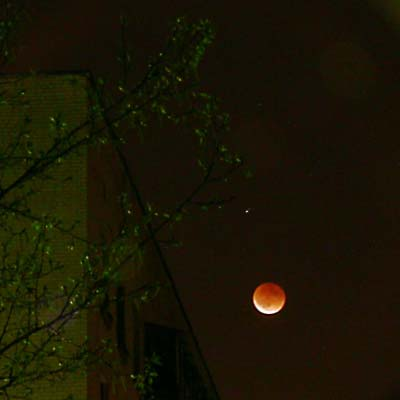
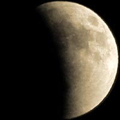
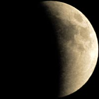
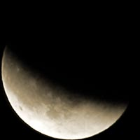
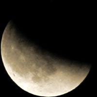
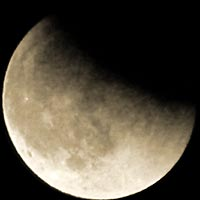
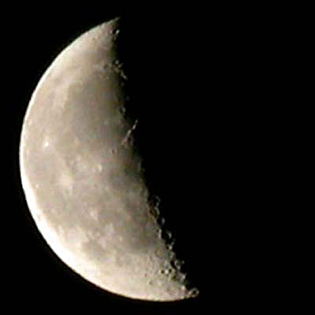

Лунное затмение 04 мая 2004 года
00:03 msk, Москва Середина затмения.
В момент полного затмения Луна освещена светом атмосферы Земли. Если в это время смотреть с Луны, то можно увидеть красное кольцо зари по всему периметру земного диска. Поэтому Луна красноватая, а не чёрная.

Обратите внимание, что на фотографиях фаз затмения не видны кратеры. Так же они обычно не видны при полной Луне из-за того, что освещены Солнцем со стороны Земли и не дают теней, видимых с Земли.
При обычном боковом освещении кратеров солнечным светом кратеры дают длинные контрастные тени, и различимы уже при небольшом увеличении. Это показано в конце странички.

22:16

22:22

22:29

22:35

22:41

22:43

00:16

00:28

00:34

00:41

00:53

01:03
Фотографии фаз Лунного затмения сделаны цифровой камерой Nikon CP 4500 с телеконвертером 3х. Под снимками указано московское зимнее время.
Более "резкая" Фотографии Луны с кратерами сделана этой же камерой (Nikon CP 4500 3х). Кратеры видны потому, что терминатор более контрастный, чем во время лунного затмения, и потому, что кратеры освещены сбоку, и отбрасывают длинные тени.
